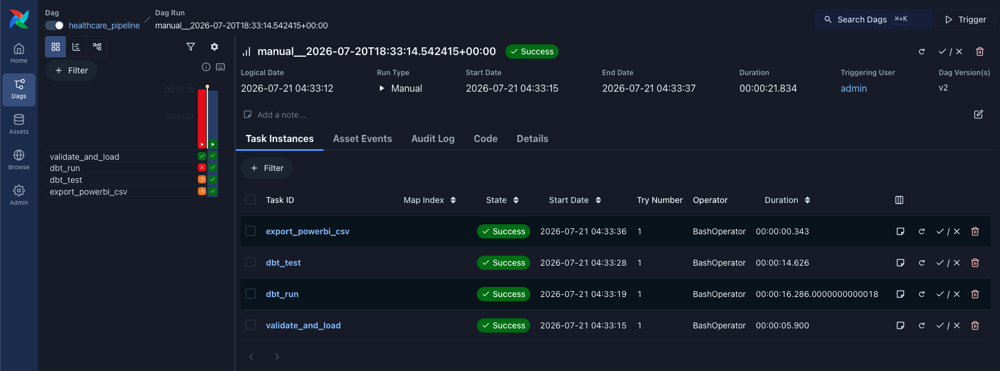

Healthcare Data Pipeline
Containerized healthcare analytics pipeline with documentation and runbook covering setup, execution, validated transformations, and Power BI reporting.
Interactive report pages
Open the corresponding page in the interactive Power BI report:
- Executive overview
- Patient population
- Utilisation
- Claims & costs
- Readmissions (30‑day return)
- Pipeline quality
Links open the live report. Page navigation is available within Power BI; exact page anchors may vary by tenant.
1. Project objective
The project builds an automated healthcare analytics platform that ingests multi-table healthcare CSV data, validates it, stores it in DuckDB, transforms it with SQL and dbt, and prepares curated dimensional data for Power BI.
The platform is designed to demonstrate analytical engineering practices. Because the source is synthetic, all results are demonstrations and must not be interpreted as real-world clinical findings.
Business questions the platform will answer
- Which conditions have the highest prevalence?
- Which patient groups have the greatest healthcare utilisation?
- What is the average cost per encounter, and how much is covered by payers?
- Which organisations, providers, procedures, and medications generate the most activity or cost?
- What percentage of patients return within 30 days?
- How do inpatient, emergency, and outpatient encounters differ over time?
- Which patients have multiple chronic conditions?
2. Platform architecture
| Layer | Technology | Purpose |
|---|---|---|
| Source | Synthea CSV exports | Provides synthetic patient, encounter, clinical, provider, payer, and cost records. |
| Ingestion | Python + DuckDB | Checks file structure, records counts, detects configured key duplicates, and loads unchanged source values. |
| Storage | DuckDB | Persists raw, staging, intermediate, marts, and audit schemas in one local database file. |
| Transformation | dbt-duckdb + SQL | Types and standardises all 16 source tables, then builds tested dimensions and analytical facts in the marts schema. |
| Orchestration | Apache Airflow | Will schedule validation, loading, dbt execution, testing, audit recording, and CSV export. |
| Reporting | Power BI | Will import curated mart CSV files from data/csv_output/. |
3. Data source
The data comes from Synthea, an open-source synthetic patient generator. Synthea generates realistic-but-not-real patient histories and can export CSV files covering healthcare encounters, diagnoses, medications, allergies, payers, providers, and other clinical events.
Source extract in this project: Synthea sample CSV export (April 2020). The supplied
csv/ directory is retained as the immutable input source.
4. Data inventory
| Source table | Business content | Loaded rows |
|---|---|---|
| allergies | Patient allergy records and associated encounters. | 597 |
| careplans | Patient care plans, dates, and associated reasons. | 3,483 |
| conditions | Diagnoses and condition periods for patients and encounters. | 8,376 |
| devices | Medical devices associated with patient encounters. | 78 |
| encounters | Central utilisation table: visits, class, provider, organisation, payer, and encounter costs. | 53,346 |
| imaging_studies | Imaging orders, body site, modality, and procedure codes. | 855 |
| immunizations | Immunization events and base costs. | 15,478 |
| medications | Medication periods, dispensing, total cost, and payer coverage. | 42,989 |
| observations | Clinical measurements, values, units, and observation types. | 299,697 |
| organizations | Healthcare organisations, location, revenue, and utilisation. | 1,119 |
| patients | Patient demographics, location, death date, expenses, and healthcare coverage. | 1,171 |
| payer_transitions | Patient payer coverage history by year. | 3,801 |
| payers | Payer details, coverage amounts, revenue, and utilisation measures. | 10 |
| procedures | Clinical procedures, reasons, and base costs. | 34,981 |
| providers | Healthcare providers, speciality, organisation, and utilisation. | 5,855 |
| supplies | Medical supply events. This source is valid but contains no data rows in this extract. | 0 |
5. Data model and relationships
patients,organizations,providers, andpayersare reference entities that will become conformed dimensions.encountersis the central fact table for healthcare utilisation and claim cost analysis.- Clinical event tables such as conditions, medications, procedures, immunizations, and observations connect to patients and usually to encounters.
providers.ORGANIZATIONlinks providers to organisations; encounter records link to patient, organisation, provider, and payer IDs.- Financial analysis will use encounter claim cost, payer coverage, and calculated patient responsibility. Medication and procedure facts remain at their own grain to prevent double counting.
6. Work completed
| Completed item | Implementation detail | Result |
|---|---|---|
| Project folders | Created directories for data, Python source, SQL, dbt, Airflow, tests, and documentation. | Complete |
| Source contract | Defined expected headers and primary keys for all 16 Synthea CSV files in src/config.py. | Complete |
| Python validation | Checks file presence, exact header order, configured primary-key blanks, configured primary-key duplicates, and empty-file policy. | Complete |
| DuckDB ingestion | Loads unmodified source values as VARCHAR fields into the raw schema in data/warehouse/healthcare.duckdb. | Complete |
| Audit logging | Records pipeline status in audit.pipeline_runs and per-table counts in audit.table_loads. | Complete |
| Reconciliation SQL | sql/analysis/check_raw_load.sql compares raw counts to the latest successful audit run. | 16 of 16 tables matched |
| dbt configuration | Configured the local dbt-duckdb project, DuckDB profile, schema-naming macro, and all 16 raw sources. | Connection verified |
| Staging transformations | Created typed, snake_case staging models for all 16 source tables. | 16 of 16 models built |
| dbt data-quality tests | Added tests for core identifiers, relationships, and non-negative financial, quantity, and utilisation fields. | All tests passed |
| Dimensional marts | Built patient, organisation, provider, payer, and date dimensions plus encounter, condition, procedure, medication, immunization, and readmission facts. | 11 models built |
| Mart quality tests | Validated dimensional keys, fact relationships, and non-negative financial values. | All tests passed |
| Power BI export | Exported curated dimensions and facts with a row-count manifest to data/csv_output/. | 11 CSV tables exported |
| Airflow orchestration | Built a Dockerised Airflow DAG for Python ingestion, dbt run, dbt test, and CSV export. | End-to-end run passed |
| Power Query preparation | Imported curated CSVs and set text keys, numeric measures, date/time fields, boolean fields, and date-only relationship columns. | Complete |
| Power BI DAX measures | Created core population, utilisation, cost, coverage, patient-responsibility, return-rate, and pipeline-monitoring measures. | Complete |
7. Ingestion reconciliation demonstration
After the Python ingestion completed, the following command ran the project's reconciliation SQL against the persisted DuckDB database:
.venv/bin/python src/run_sql.py sql/analysis/check_raw_load.sql
The query compares three independent counts for each source table: the current
raw table count, the source CSV count captured in the audit log, and the
loaded count captured in the audit log. A table passes only when the current raw-table
count equals the audited loaded count.
| Validation measure | Result |
|---|---|
| Source tables reconciled | 16 of 16 |
| Tables with matching source and loaded counts | 16 of 16 |
| Configured duplicate primary keys found | 0 |
| Largest loaded table | observations — 299,697 rows |
| Empty-file exception | supplies — 0 rows, explicitly allowed by the source contract |
| Reconciliation outcome | All tables returned match |
This verification demonstrates that the CSV inputs were loaded without row loss and that the audit log can be used to validate the raw data layer before dimensional modelling begins.
8. dbt staging and quality demonstration
dbt is configured to connect directly to the persisted DuckDB warehouse. The staging layer standardises all 16 raw source tables, converting identifiers, dates, timestamps, counts, and monetary values into analytics-ready types while retaining event grain.
| dbt verification | Result |
|---|---|
| dbt adapter connection | dbt-duckdb connection verified |
| Registered raw sources | 16 source tables |
| Built staging models | 16 of 16 passed |
| Core dimensions staged | Patients, encounters, organisations, providers, and payers |
| Clinical event models staged | Conditions, procedures, medications, immunizations, observations, and related clinical events |
| Data-quality tests | All identifier, relationship, and non-negative value tests passed |
The completed staging layer feeds the dimensional Power BI marts described below.
9. Dimensional mart demonstration
The marts schema now contains a Power BI-ready star schema. The four
conformed dimensions provide population, organisation, provider, and payer attributes;
encounter and clinical facts retain their source event grain to avoid double counting.
| Mart group | Completed models | Analytical purpose |
|---|---|---|
| Conformed dimensions | dim_patient, dim_organization, dim_provider, dim_payer, dim_date | Power BI slicers, descriptive attributes, and time analysis. |
| Utilisation and finance | fact_encounter | Encounter volume, class, cost, payer coverage, and patient responsibility. |
| Clinical events | fact_condition, fact_procedure, fact_medication, fact_immunization | Condition prevalence, clinical utilisation, and native-grain costs. |
| Readmissions | fact_readmission | Completed inpatient encounters with a later inpatient or emergency return within 30 days. |
| Mart validation | Key, relationship, accepted-value, and non-negative-value tests | All tests passed. |
The mart layer has been exported as CSV for Power BI. Supplementary dashboard aggregates can be added later if a specific report measure needs them.
10. Airflow orchestration demonstration
Apache Airflow runs locally in Docker Desktop and automatically executes the four pipeline stages in dependency order: Python validation/loading, dbt transformations, dbt tests, and Power BI CSV export.
This verified run demonstrates the complete automated pipeline from synthetic Synthea CSV files to refreshed Power BI-ready CSV extracts.
11. Power BI semantic model preparation
The exported mart CSVs have been prepared in Power Query and are ready for report-page
visual design. Keys remain text to preserve UUIDs, financial measures use fixed decimal
numbers, count fields use whole numbers, and event timestamps were converted to date-only
fields where required for relationships with dim_date.
| Power Query preparation | Completed work |
|---|---|
| Keys and identifiers | UUID fields ending in _id are Text fields, preventing formatting and precision changes. |
| Measures | Costs, payer coverage, revenue, and responsibility are Fixed decimal numbers; counts and durations are Whole numbers. |
| Time fields | Calendar fields are Date; event fields ending in _at are Date/Time. |
| Date relationships | Date-only fields were derived from encounter, procedure, immunization, and readmission timestamps for use with dim_date. |
| Boolean fields | Active-condition, weekend, and 30-day return flags use True/False values. |
Created DAX measures
Population and utilisation:
Total Patients = DISTINCTCOUNT(dim_patient[patient_id])
Total Encounters = COUNTROWS(fact_encounter)
Unique Patients = DISTINCTCOUNT(fact_encounter[patient_id])Claims and cost:
Total Claim Cost = SUM(fact_encounter[total_claim_cost])
Payer Coverage = SUM(fact_encounter[payer_coverage])
Patient Responsibility = SUM(fact_encounter[patient_responsibility])
Average Cost per Encounter = DIVIDE([Total Claim Cost], [Total Encounters])Clinical and medication cost:
Total Procedures = COUNTROWS(fact_procedure)
Procedure Cost = SUM(fact_procedure[base_cost])
Medication Cost = SUM(fact_medication[total_cost])
Medication Patient Responsibility =
SUM(fact_medication[patient_responsibility])Readmissions and pipeline monitoring:
30-Day Returns =
CALCULATE(
COUNTROWS(fact_readmission),
fact_readmission[returned_within_30_days] = TRUE()
)
30-Day Return Rate =
DIVIDE([30-Day Returns], COUNTROWS(fact_readmission))
Latest Export Time = MAX(export_manifest[exported_at_utc])
Exported Table Count = DISTINCTCOUNT(export_manifest[table_name])
Total Exported Rows = SUM(export_manifest[row_count])The semantic model and measures are complete. The remaining Power BI work is to arrange these measures and prepared fields into dashboard visuals, filters, and navigation.
12. Interview talking points
Why not use only SQL to export a CSV for Power BI?
SQL alone can create a CSV export, and that is appropriate for a one-off analysis. A dashboard, however, is a recurring data product. This project uses Python validation, DuckDB, dbt, and Airflow to make every refresh reliable, repeatable, and auditable.
| SQL-only export | Engineered pipeline |
|---|---|
| Manual query execution | Automated Airflow refresh |
| One large query can be difficult to maintain | Layered raw, staging, and mart models |
| Limited validation | Source, relationship, and financial-value tests |
| Failures can go unnoticed | Task status, retries, logs, and audit records |
| Power BI receives mixed or raw data | Power BI receives tested dimensions and facts at the correct grain |
The extra engineering is not for the CSV itself; it makes each dashboard refresh trustworthy, reproducible, and maintainable.
How is the dashboard updated when source data changes?
- Replace or update the source files in
csv/. - Trigger
healthcare_pipelinein Airflow, or let its future schedule run. - Airflow validates and reloads raw data, rebuilds dbt models, runs tests, and refreshes
data/csv_output/. - Refresh the Power BI Folder connector to load the updated dimensions and facts without rebuilding the report.
If validation or dbt tests fail, Airflow does not run the CSV export task. Power BI therefore keeps the previous successful export instead of receiving invalid data.
13. Next steps
- Build Power BI dashboard visuals and pages for executive overview, patient population, utilisation, claims and costs, readmissions, and pipeline quality.
- Add supplementary dashboard aggregate marts only when a report measure needs them.
- Add Docker and dbt checks to GitHub Actions CI.